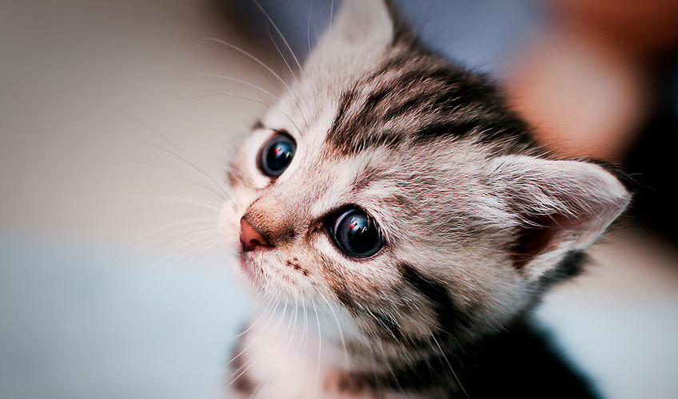

places must visit
Burj Khalifa
i had visited in jul 2018
The Burj Khalifa Arabic: برج خليفة, Arabic pronunciation:, 'Khalifa Tower'), known as the Burj Dubai prior to its inauguration in 2010, is a skyscraper in Dubai, United Arab Emirates. With a total height of 829.8 m (2,722 ft, just over half a mile) and a roof height (excluding antenna, but including a 244 m spire[2]) of 828 m (2,717 ft), the Burj Khalifa has been the tallest structure and building in the world since its topping out in 2009, supplanting Taipei 101, the previous holder of that status
shalimar gardens
i had visited in jul 2019
Shalimar Bagh is a Mughal garden in Srinagar, Jammu and Kashmir, India, linked through a channel to the northeast of Dal Lake. It also known as Shalimar Gardens, Farah Baksh, and Faiz Baksh. The other famous shoreline garden in the vicinity is Nishat Bagh, 'The Garden of Delight'. The Bagh was built by Mughal Emperor Jahangir, for his wife Nur Jahan, in 1619. The Bagh is considered the high point of Mughal horticulture. It is now a public park and also referred to as the "Crown of Srinagar"

gateway of india
i had visited in 2017
The Gateway of India is an arch-monument built in the early 20th century in the city of Mumbai, India. It was erected to commemorate the landing in December 1911 at Wellington Pier, Mumbai of King-Emperor George V and Queen-Empress Mary, the first British monarch to visit India. At the time of the royal visit, the gateway was not yet built, and a cardboard structure greeted the monarch.
review on the movies

Excellent film to culminate MCU ride
We're in the endgame now

nice for one time
My favourite movie of Harry Potter Spoilers Ahead: Harry teaches the whole school how to defend themselves as no one believes him that the dark lord is back or do they think that he is back but are afraid to admit it.

Beautiful, Enchanting and Layered
Bottom Line: The film will bring back the magic for your t(w)een, who was a fan of the original. But, it could be too intense for preschoolers. There are some spoilers below in the full review. Full Review: While it had some great songs, and I thought better instrumental music, I still like the music from the original better. The reprise of "Into the Unknown" at the end of the movie is sung by Panic! At the Disco - clearly meant to appeal to the original Frozen fans, who are now tweens and teens.
news about environment
-
LEGO plans to find replacement material for bricks by 2030

In an effort to be more environmentally responsible, LEGO have said they aim to stop manufacturing bricks made of plastic resin and are considering other options, which could include hemp. According to Telegraph World, the company makes 60 billion blocks a year. While LEGO want to replace the harmful plastic used in their products, they also require the new material to meet the high standards that allow the blocks to work as they always have, especially with the effective “clicking” together is a key aspect of the iconic coloured block.
-
Amazon deforestation and number of fires show summer of 2019 not a 'normal' year

The perceived scale of the Amazon blazes received global attention this summer. However, international concerns raised at the time were countered by the Brazilian Government, which claimed the fire situation in August was 'normal' and 'below the historical average'.An international team of scientists writing in the journal Global Change Biology say the number of active fires in August was actually three times higher than in 2018 and the highest number since 2010.
Books
Bill Gates
Reading is still the main way that I both learn new things and test my understanding.
List of Books
Harry Potter and the Deathly Hallows Pt. 2

Man on the Moon (Picture Puffins)
Man on the Moon
It was 1969 and no one had ever set foot on the moon. Some said it couldn't be done. But astronauts Mike Collins, Buzz Aldrin, and Neil Armstrong were going to try . . . Here in picture book format is the amazing true story of the first moon landing, when a man set foot on an unexplored world and showed us that the boundaries of our world were limitless."[A] perfect introduction to space, the space program, and exploration. Thrilling!" (Kirkus Reviews)"The milestone event [is] a great idea for a picture book!"
BEST BUY LINK

Space Encyclopaedia
Space Encyclopaedia
The universe is bigger than you can ever imagine and it is full of fascinating facts that will astound you! This Space. Encyclopaedia is your guide to the infinite wonders of outer space. Browse through the pages and know more about galaxies, planets, stars and much, much more!.
BEST BUY LINK
Geronimo Stilton The Wizards Wand
Adyan Ahmad
These are lovebirds I wanted to put my lovebirds' picture but no other bird is as unique as mine even these rainbow ones. My two pets names are Olive & Snow
The wolf (Canis lupus[a]), also known as the gray wolf or grey wolf, is a large canine native to Eurasia and North America. More than thirty subspecies of Canis lupus have been recognized, and gray wolves, as colloquially understood, comprise non-domestic/feral subspecies. The wolf is the largest extant member of the family Canidae, males averaging 40 kg (88 lb) and females 37 kg (82 lb). Wolves measure 105–160 cm (41–63 in) in length and 80–85 cm (31–33 in) at shoulder height. The wolf is also distinguished from other Canis species by its less pointed ears and muzzle, as well as a shorter torso and a longer tail. The wolf is nonetheless related closely enough to smaller Canis species, such as the coyote and the golden jackal, to produce fertile hybrids with them. The banded fur of a wolf is usually mottled white, brown, gray, and black, although subspecies in the arctic region may be nearly all white.

woof
maow
rowr